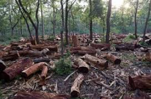
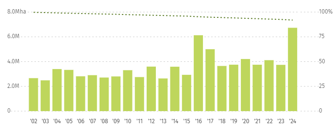
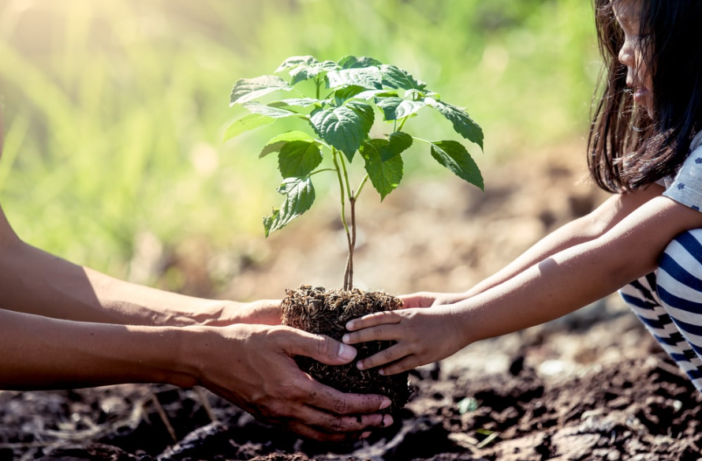
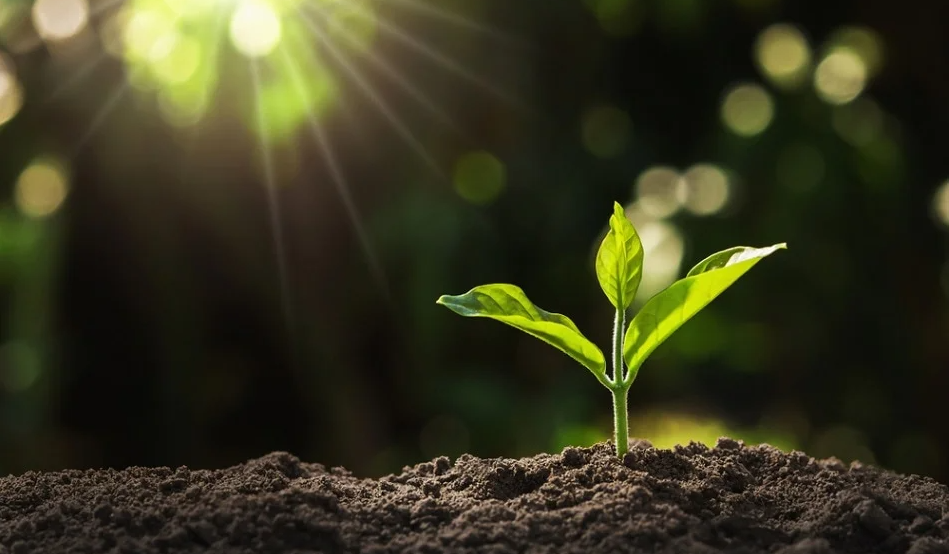

The importance of this SDG lies in our dependency on our land ecosystems. We humans depend on our environment to create and destroy. It provides us with the resources we need for our survival; while this is important for us, it is also important to our world. Terrestrial environments are a huge part of the Earth's natural balance; they regulate our climate and support biodiversity. Without them, human life and the earth will suffer greatly.
 | Year | Area | Percentage |
|---|---|---|
| 2015 | 6.0 Mha | ~96% |
| 2016 | 4.9 Mha | ~95% |
| 2017 | 3.7 Mha | ~95% |
| 2018 | 3.8 Mha | ~94% |
| 2019 | 3.7 Mha | ~94% |
| 2020 | 4.0 Mha | ~93% |
| 2021 | 3.9 Mha | ~93% |
| 2022 | 3.6 Mha | ~92% |
| 2023 | 4.0 Mha | ~92% |
| 2024 | 6.6 Mha | ~91% |
Life on land has been lacking these past few years. The attention that it has been getting is being sidelined by all of the problems we have. A lot of what humans are worrying about are the less important things, like social media and drama. No one takes notice of the degradation of our terrestrial ecosystems and it's not about the public’s lack of information on this topic, it's just that no one really cares. That is the problem we humans face today, we are so caught up with our own lives that we fail to realize what is happening to the environment around us. Put down your phone, go outside and look at what nature has to offer. All of this will disappear by the time people will actually care. That is the issue with us, we don’t care until we are either late or too late.
It’s no surprise that we have a massive impact on the environment around us, but what’s really happening? Last year, we lost forests at record-breaking levels. We are at the peak of deforestation. In the years leading up to 2025, the rate of forest loss has only continued to climb higher and higher. This destruction causes serious problems like land degradation and the loss of habitats, which eventually lead to even bigger challenges for us all. Remember, we are part of this environment—the Earth will survive, but will we? The truth is, the only ones truly harmed by this destruction are ourselves, because our livelihoods depend on a healthy planet. If our forests disappear, we will disappear with them.
Don’t lose all hope yet, there are a lot of programs taking action to combat this. We have seen the rise of more tree planting community activities, the promotion of sustainable choices and scientists researching more ways to help better our environment. As a community, we are already developing many different solutions. We have the answers for this problem, but we need your help. It is simple to help save our environments but we can’t do it if we are not coordinated to do so.
Governments and organizations around the world are starting to take bigger steps too. Protected areas and national parks are being expanded, and new laws are being passed to limit deforestation and support reforestation. These efforts are showing that change is possible, but only if we keep pushing forward together.
 This is where I come in. I’m here to inform you about the problems we humans need to face so we can take the next step toward truly coexisting with our planet. I want to inspire people to actively support these projects and help spread not just awareness, but real motivation to get involved. I know most people are already informed about this topic, but I doubt many actually care, even in my own household, I don’t see anyone truly paying attention to the environment until it affects the bills. So, I’m here to try and make you care about what’s happening to the world, and I hope this website can inspire others to do the same.
So what are you waiting for? Take a step outside, breathe in some of that air and let's save our environment one tree at a time, because our problem is not the lack of knowledge or power it’s the lack of motivation.